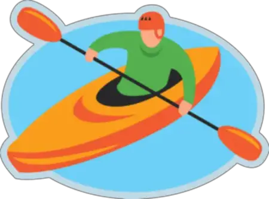

Kayaking Information
Kayaking Information
Kayaking Trip
Kayaking is a fun and relaxing way to appreciate
nature, enjoy the company of others, excercise and more.
In his book Why You Should Try Kayaking,
Omar Almasri describes kayaking as a peaceful and delightful
experience.
Time and Date
Location
We will be meeting at the lake located at the end of the road in the park.